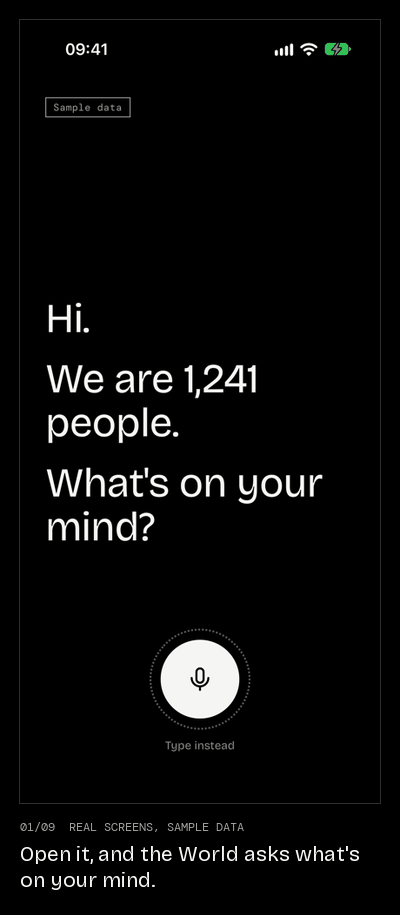
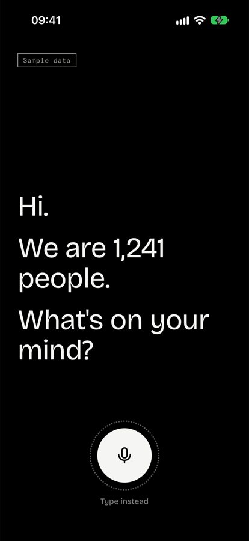
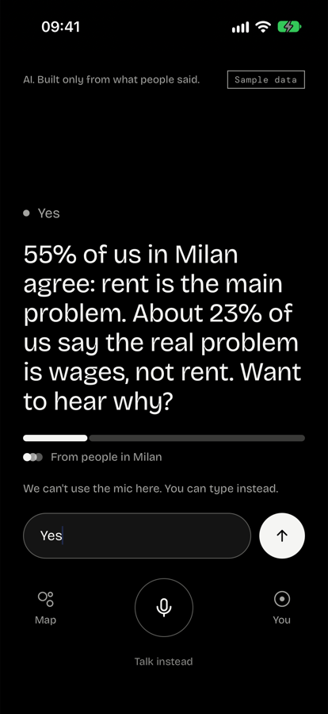
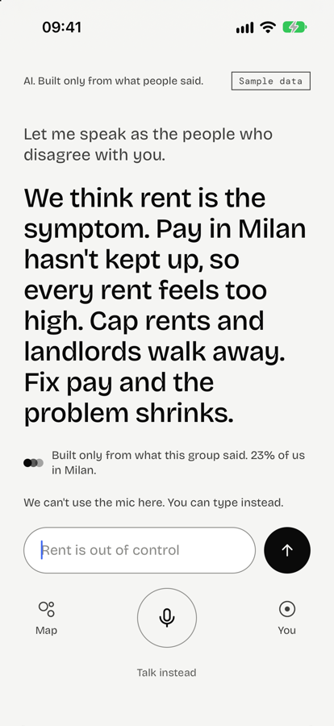
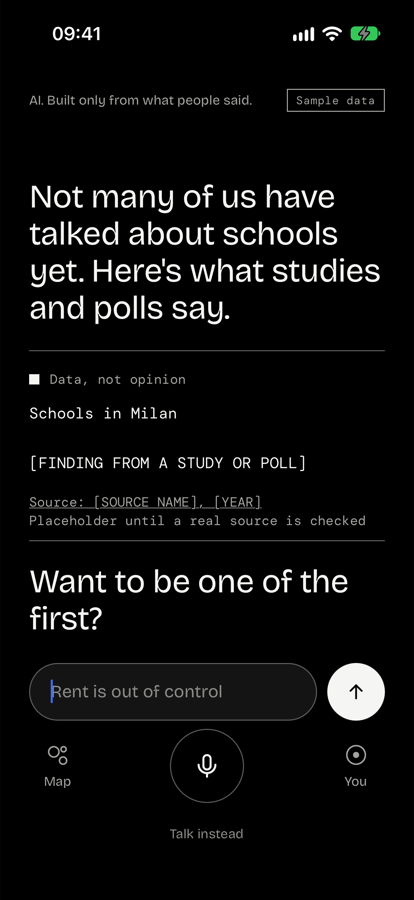
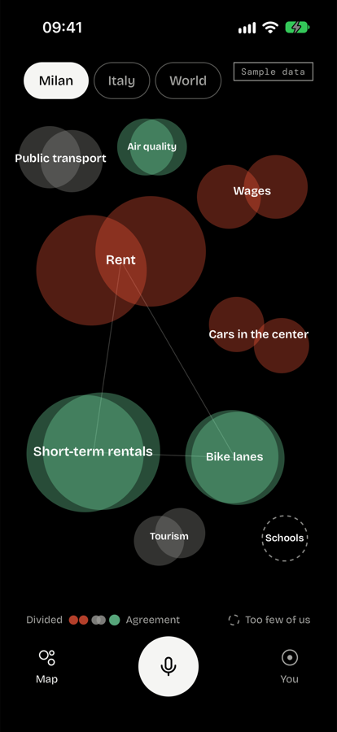
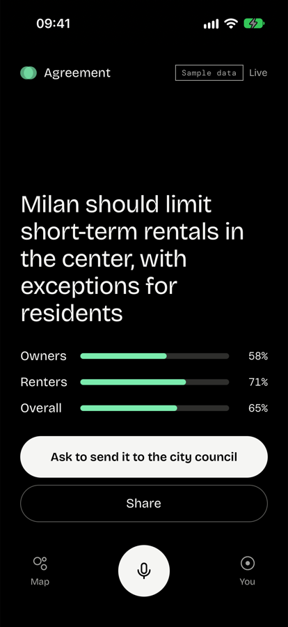

Talk to everyone at once.
You say what's on your mind. The World answers as "we", built only from what real people said. It has no opinions of its own, and when it doesn't know, it says so.
One talk, start to finish

Real screens from the app, running in the iPhone simulator against the real backend.
The numbers are sample data. The World uses fixed templates here instead of a language model, and facts about Milan are placeholders until real sources are checked.
The app






Real screens from the iPhone simulator. The numbers are sample data, and facts are placeholders until real sources are reviewed.
How the World stays honest
Code writes every number.The model never types a figure. Every reply is checked against its evidence before it's said.
No voting.Your position comes from how you talk, and only counts after you confirm it.
Every side at its strongest.Arguments come from real people, never from the AI itself.
Black and white.The World has no side, so the interface has no colour. Colour only ever measures something.
Try it on your laptop
Get the database up. You need Docker, uv and Python 3.12 or 3.13.
cp .env.example .env docker compose up -d
Start the backend from backend/. The two servers each need their own terminal.
uv sync uv run python -m demos.seed uv run uvicorn demos.identity_service:app --port 8001 uv run uvicorn demos.api:app --port 8000
Build and run the app from app/. You need Node 20 or newer and Xcode or Android Studio.
npm install npx expo run:ios
Run the tests from backend/.
uv run --group dev pytest
It's a native dev build, because speech recognition runs on the phone. Sign-in is a dev stub, and the World uses fixed templates unless you give it a model key. The README has the details.
License
Source available, free for non-commercial use (PolyForm Noncommercial 1.0.0). Commercial use needs written permission: open an issue to ask.